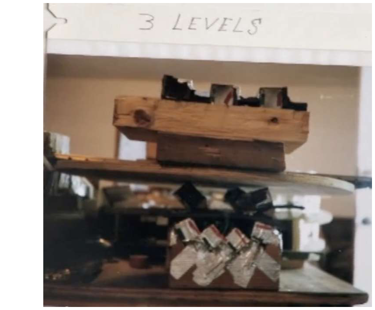
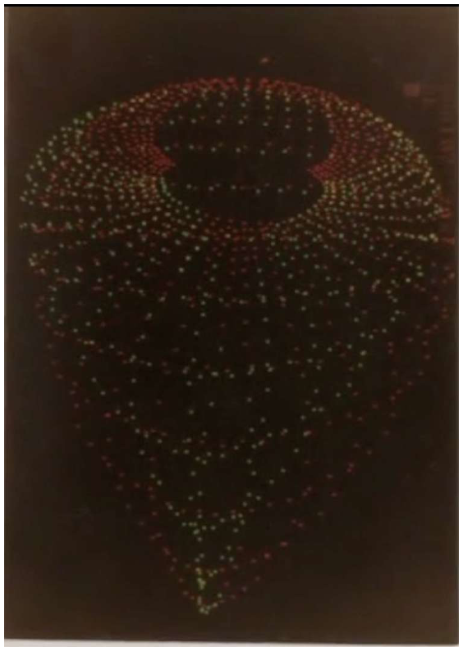
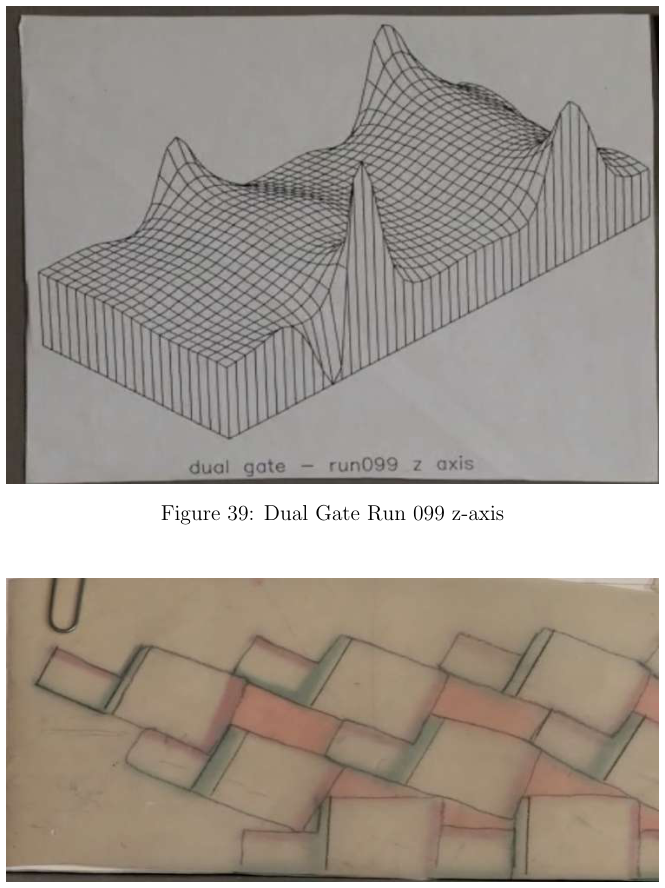
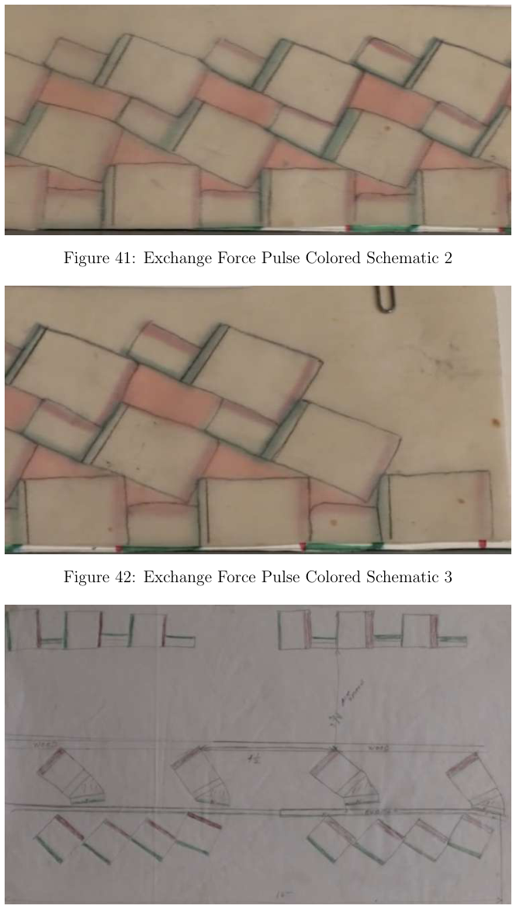
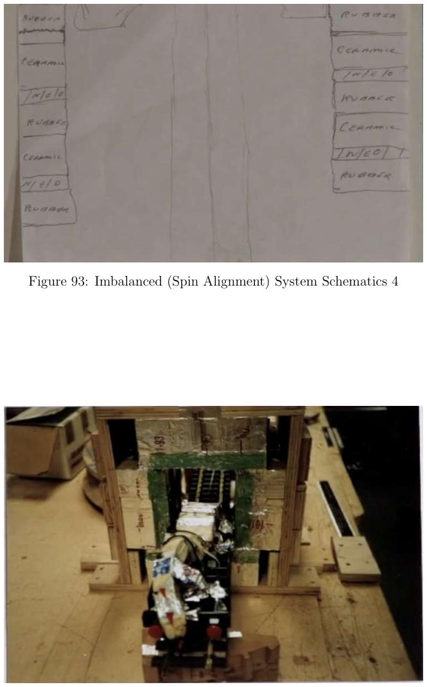
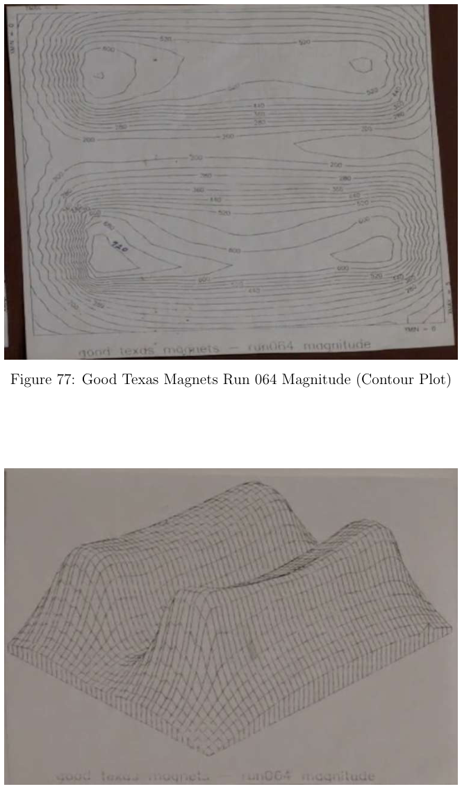
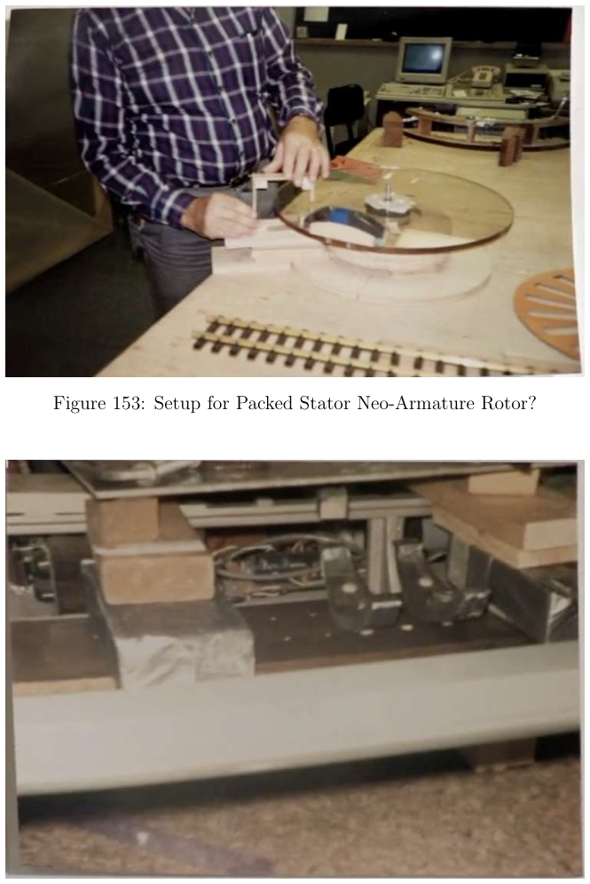
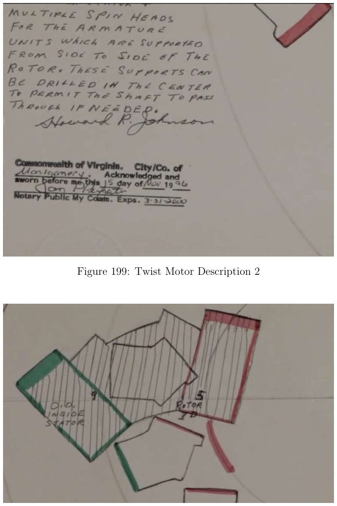

Howard Johnson 磁闸档案
一句话：一个 1919–2008 年的争议发明家，留下 152 页、262 幅图 的实验影像——全是"怎么让磁通只往一个方向走"的记录；
没有正文、没有结论、也没有可复算的参数表 。它的价值在"保存了什么"，不在"证明了什么"。
档案三件套： ① 三批实验的日期锚点 （1985-10/11、1994-07、1996-11-15）；
② 一条清楚的材料迭代线 （Texas 磁铁 → 香蕉磁铁 → 分层磁铁 → 加滤波器 → 无磁多层 → 钕环/钕衔铁/密排定子）；
③ 四个被反复画的核心概念——磁闸（Gate） 、交换力脉冲（Exchange Force Pulse） 、感应斥出（Induction Expulsion） 、扭转电机（Twist Motor） 。
先把话说死： Howard Johnson 的"永磁体可输出净功"主张，主流物理学不接受 ，而且至今没有成功、独立、可复现的公开复现记录 ——
最著名的复刻尝试（Mylow 2009）未获认证，且被多方质疑作假。本页把"档案里有什么"与"这些主张成立与否"严格分开 写。
1 先认识这个人（这部分的证据是硬的）
生卒 Howard Robert Johnson，1919-06-01（弗吉尼亚 Pound）～ 2008-01-02（Blacksburg） 职业 电气工程师 / 发明家。曾在 Oak Ridge 参与原子能项目、为 Burroughs 做磁学研究、任 Lukens Steel 科学顾问；名下与化学/物理相关专利 30+ 项。 代表作 《Discovering Magnetism》（1970）→ 再版为《The Secret World of Magnets》（2006） 核心专利 US 4,151,431 （1979，永磁电机，最著名）｜US 4,877,983（1989，磁力产生法）｜US 5,402,021（1995，磁推进系统）｜US 3,668,585（1972，铸造磁路电磁装置）核心构想 磁闸（magnetic gate） ：用强"主磁铁（lead）"＋弱"遮蔽磁铁（shade）"控制磁通区域，让转子"只在一个方向上被放行"——即给磁通做一条单行道 。圈内地位 被 Tom Bearden 等称为"磁交换力（Magnetic Exchange Force）先驱 "；有专题纪录片《Energy from the Vacuum: Part 4》（2005）。 测量方法 用"非干扰探头"测绘磁场的三维分布，得到的是等高线 + 三维网格面 ——这正是本档案里那 262 张图的主要形态。
2 三批实验：日期就写在图注里
1985-10-07 ／ 11-11 ／ 11-14
第一批：轨道与 b-run
图注残留 "Colo Track … 10/7/1985"、"b-run 51 11/11/1985"、"b-run 52/53 11/14/1985"。这一批以直线轨道（Track） 与"穿闸轨道"为主。
1994-07（6/11/14/21/22/25/26/27/29 日）
第二批：实验 36–49 · 感应斥出
图注日期戳最完整的一批。核心是"高响应测力计测试感应斥出系统 "，配实验台俯视图与等轴视图——这是全档案里唯一带测量仪器说明 的部分。
1996-11-15
第三批：扭转电机（Twist Motor）
后期最完整的一套设计：构造照片 ×7、说明 ×2、示意图 ×3。末尾一张把"扭转电机"与"交换力脉冲"画在一起——说明前者是后者的一次实机实现。
同日的手写说明做了公证 （Commonwealth of Virginia，公证人 My Colvin，有效至 2000-03-31）。
为什么日期锚点重要： 它能证明这不是"事后编的一本图册"，而是一条**跨越 11 年**的连续实验线（1985 → 1996）。
这在圈内文献里其实很少见——大多数主张只有一段视频或一张照片。
3 262 幅图都在哪：按页块索引
页码 图号 内容块 备注
P1 — 标题页 + fair-use 声明 作者格言 "Nam qui curat" P2–P11 1–11 黄铜小车（Brass Car）失衡系统 三层结构、多视角；3D 木质拓扑等高线；"坏德州磁铁" P9 14 Double Vortex（双涡旋） 全附录唯一 出现 "Vortex" 字样的图 P12–P33 15–33 双香蕉磁铁（Dual Banana） 吸引/排斥 runs 100–102 的 x/y/z + 量值 P20–P23 34–40 双闸（Dual Gate）run 099 含等高线 P23–P28 40–52 ★ 交换力脉冲（Exchange Force Pulse） 彩色示意 ×3 + 单色 ×5 + 左右侧 + 系统图；全档案最核心的机理图区 P29–P36 52–65 实验 36–49（1994-07） 含"高响应测力计测试感应斥出系统" P37–P44 66–76 闸面（Gate Face）测试 Gate Face 1 South run 093；2 North run 095 P45–P51 77–89 好德州磁铁（Good Texas Magnets） runs 064–065；与 P3 的"坏德州磁铁"对照 P52–P54 90–97 失衡（自旋对齐）系统 + 感应斥出闸 示意 ×4 + 闸 ×3 + 测试台照 P55–P70 98–126 分层磁铁族 run 107 → 带滤波器 run 108 → 无磁多层 runs 115–116 P73–P81 127–140 钕（Neo）族 车尾钕环笔记；独立钕衔铁 ×4；密排定子钕衔铁 ×7 P81–P87 141–152 杂项 runs 72、100、107、114、60（含 ZYX 顺序的"前四分之一/后四分之一"切分） P87–P89 153–157 测试台搭建 备用密排定子转子、双香蕉测试台、感应斥出闸测试台 P90–P108 158–188 轨道段 t1108 / t1110 与"穿过闸的轨道（Track Thru gate）run 096" P109–P118 189–203 ★ 扭转电机（Twist Motor） 构造 ×7 + 说明 ×2 + 示意 ×3；1996-11-15 P119–P152 204–262 b-run 系列 （1985 & 1996）27、51–55、72、77、79、96–99、100–102、107–109、113、121
4 词频：他的主战场根本不是"涡旋"把 262 条图注做个词频，结果很能说明问题——"Gate" 与 "Track" 才是主轴，"Vortex" 只出现 1 次 ：
这张图纠正了一个流传很广的印象： 网上讲 Howard Johnson，常配"磁场涡旋结构"的说法（复刻项目 hojo.ws 的转述）。
但档案本身的语言是轨道、闸门、闸面、穿闸 ——一个机械门控 的故事，不是"涡旋"的故事。
"涡旋"在原始档案里只有一张图（Fig 14），而且是点阵测绘结果 ，不是装置设计。
5 八张原图：我逐张看过，下面写的是图里实际有什么 这批 PDF 的图几乎全是照片与手绘稿的翻拍 ，分辨率不高、没有文字说明。以下八张我逐张看过，按"实际看到的内容"写图注，
不含 对物理含义的推断（推断另起一段，并标"推断"）。

图 1 · 三层失衡系统＋黄铜小车 ：一张木架照片，架子上贴着手写的 "3 LEVELS" 标签；中间层放着一个金属（黄铜色）小车，上层是一块带凹槽的木件。
P1, Figure 1

图 14 · Double Vortex ：不是照片，也不是示意图，而是一张点阵图 ——上千个红/绿/白色小点排成一个"上宽下尖"的双叶轮廓，顶部中央有一个空的暗区，整体向下收成 V 形。
P8, Figure 14（标注 "Most likely a B-run 108"）

上：图 39 · 双闸 run 099 的 z 轴 ——一张三维网格曲面，两个尖峰立在一片平缓的起伏上。下：图 40 · 交换力脉冲彩色示意 1 ——手绘：一排排浅色方块（磁块）斜着错位叠放，中间夹着粉色与绿色的边条。
P22, Figures 39–40

图 41–42 · 交换力脉冲彩色示意 2、3 ：与图 40 同一套"阶梯阵列"，角度略有不同；浅绿＝块，粉色＝块与块之间的界面。
图 43 · 线稿 ：同一机构的侧视/剖视，上方一排"梳齿状"构件，下方是错位块阵与一条水平轨道线。
P23, Figures 41–43

上：图 93 · 失衡（自旋对齐）系统示意 4 ——一张手写材料清单，两列重复写着 "Rubber / Ceramic / In-foil / Rubber"，即橡胶—陶瓷—铟箔—橡胶 的层叠顺序。
下：图 94 · 感应斥出闸 1 ——木质台架上的实拍装置：中间一叠绿色片状物（磁铁组），两侧木板夹持，下方有线缆与白色束带。
P53, Figures 93–94

图 77 · 等高线图 ：一叠闭合等高线，标着 500 / 520 / 1000 / 1400 之类的数值，中央有一条东西向的"鞍部"。
图 78 · 同一组数据的三维网格面 ：两个圆丘夹一条脊，右侧另有一个小峰。
P44, Figures 77–78（Run 064 Magnitude）

上：图 153 · 密排定子钕衔铁转子？ ——一个穿格子衬衫的人在木质工作台前操作一个圆形转盘，台面左侧摆着一排梳齿状小磁铁 ，背景是一台老式示波器。
下：图 154 · 双香蕉磁铁测试台 1 ——台面近景：磁铁、夹具、金属板与线缆。
P87, Figures 153–154

上：图 199 · 扭转电机说明 2 ——手写便条："Multiple spin heads for the armature units which are supported from side to side of the rotor…"，下方盖着公证章 （Commonwealth of Virginia / Montgomery County，1996-11-15，公证人 My Colvin）。
下：图 200 · 扭转电机示意 1 ——手绘：绿色块标注 "O.D. Inside Stator"，红色块标注 "Rotor"，中间是折线连成的多边形轮廓。
P115, Figures 199–200
必须说清的三件事： 没有任何文字说明 ——没有实验条件、没有量程、没有结论。所以"从图注重建实验"是不可能的，能重建的只有装置形态 与时间线 。磁场强度的空间分布 ，不等于 "净功输出"。把等高线读成"能量地形"是常见的越界。目检所见 ；凡带"推断"二字的段落才是我加的判断。两者请不要混着引用。
6 复刻史：26 年里，没有一次成功
时间 尝试 结果与状态
2001–02 JLN Labs（J.-L. Naudin）仿真 做了数值/几何仿真探索，不是实物验证 。⬜ 2009-03 Mylow（芝加哥） 声称复刻"巨石阵"电机声称连续运转 ~26 h、转速上限 ~80 rpm、"定子磁铁一天内退磁"；最关键的实机检查未能成行 ；社区多人复刻未成功；Peter Lindemann 等多方认为系作假 （底座疑似藏电机）；Mylow 后停止；"NSA 上门"叙事无法证实。⬜（多方存疑） 2014 Esmann 专利申请 US 2014/0232229 A1 引用 HJ 成果；自认 "法线→圆周转换"未成功。⬜ 2018 → 今 hojo.ws 开源复刻项目 （发布 CAD、物料清单）项目自述"尚无功能声明 ——研究者本人尚未见到成功实例"，进行中 。🟡（进行中） 2005 / 2008 Bearden／《Energy from the Vacuum Part 4》DVD 访谈与主张整理，倡导性，非验证 。⬜
结论（2026-09 检索）： Howard Johnson 的磁电机，至今没有成功、独立、可复现的公开复现记录 。
唯一还在进行的现役复刻（hojo.ws）自己都没有发布成功声明——这一点比任何"据说成功了"的叙事都更有信息量。
7 为什么这份档案仍然值得留三句话：
它是一手史料，不是二手转述。 三批日期、11 年跨度、装置迭代线，这些都能被独立核对——即使结论不成立，档案本身是真的。它提供了"磁门控"这个设计母题的完整案例。 后来 Denny 那篇分类学讨论 Sprain 时明确写道：Sprain 可以借鉴 Johnson 在"自旋电子学与磁门控 "上的发现，去造"磁转移动被增强或抑制的扇区"——
两个人在"交换力（exchange force） "这个词上直接接轨（HJ 的 Magnetic Exchange Force → 附录的 Exchange Force Pulse → Denny 的 mass-energy / routed exchange）。它是一份"怎么做假会被看穿"的对照教材。 Mylow 事件里，真正杀死它的不是理论反驳，而是"实机检查没能成行 "这个程序性事实——
这正是 ① 分类学 里那套"反作用路径审计"要防的东西。
8 证据分轨
内容块 状态 说明
附录内容（152 页影像档案） ✅ 本地 PDF 可查；262 条图注可全文检索。 HJ 生平与 4 项专利 ✅ 多方公开来源一致，专利号可在 USPTO / Google Patents 核。 三批日期锚点 ✅ 直接写在图注里（含公证日期 1996-11-15）。 "永磁体输出净功" ⬜ 未见独立复现；主流物理不接受。 "旋转型样机曾自持运转" ⬜ 公开讨论说法不一（论坛来源，低证据）。 "磁场涡旋结构"发现 🟡 原始记录＝本档案的等高线/点阵图；"涡旋"解释来自复刻项目转述。 附录里的测量数据本身 🟡 一手数据，但无实验条件与方法说明 ，独立复算无从谈起。